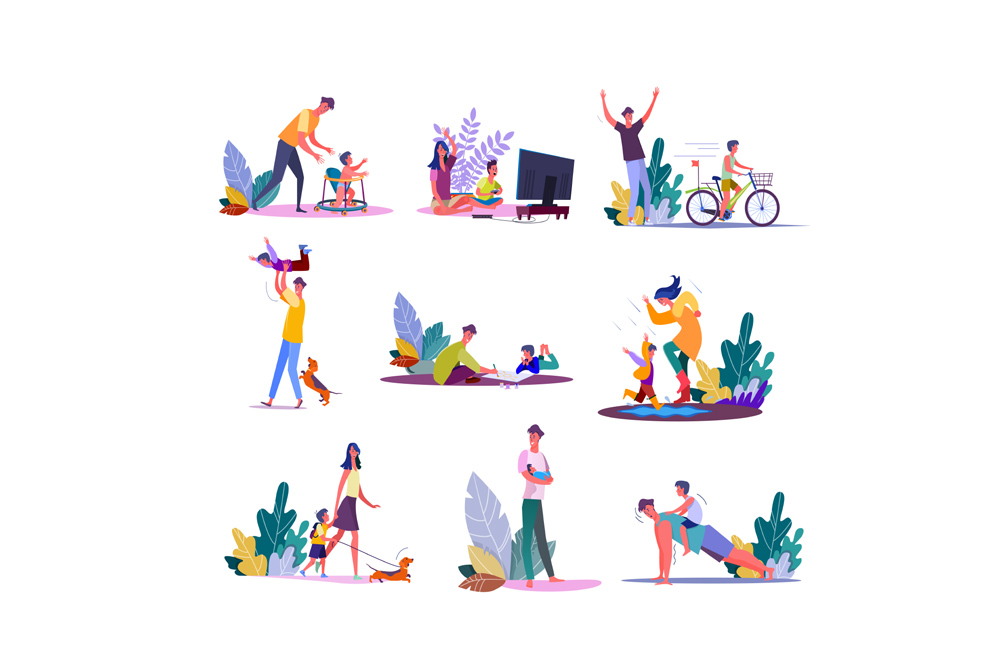

Jan 16, 2019

For any student, it is important to have some kind of trusting bond with their parents as well as their teachers. These are the two people who play the most important role in shaping a student’s life as well as their career. In the entire day, students spend half of their time at school or colleges where they are around their teachers and it is important for them to be able to trust them for if they are in need of any help. Apart from that, it is also important for parents to know about their child’s progress in education and if they are facing any situation or difficulty. Interacting with their child’s teachers lets the parents know about their child's performance in school and also establishes a kind of repo and understanding between the teacher and the parent.
For the same purpose, Parent Teacher’s meetings have been organized and scheduled since a long time in the history of education. It is important for parents and teachers to collectively work on the child’s progress and provide them with any kind of help or support that they need. There have been some scenarios where the children don’t feel comfortable enough to talk to their parents or their teachers about certain things that have been bothering them. Due to the lack of trust and communication, the child gets negatively affected and not just with respect to studies, but it affects their mental health and well-being as well.
There isn’t any compulsion that the PTM’s have to be organised within the four walls of the school classroom itself. The Parent-Teacher interaction can be made into a great experience too. We at ASKMETRIP help organize such meet trips for Schools and Colleges that can be a great way for students to establish a trust bond between their teachers and their parents. It can also be a way for the students, their parents and the teachers to relax a little from their busy lives and get to know each other on a better scale too. Do get in touch with us and we’ll help you out to plan a great Parent Teacher Meetrip.
written by :